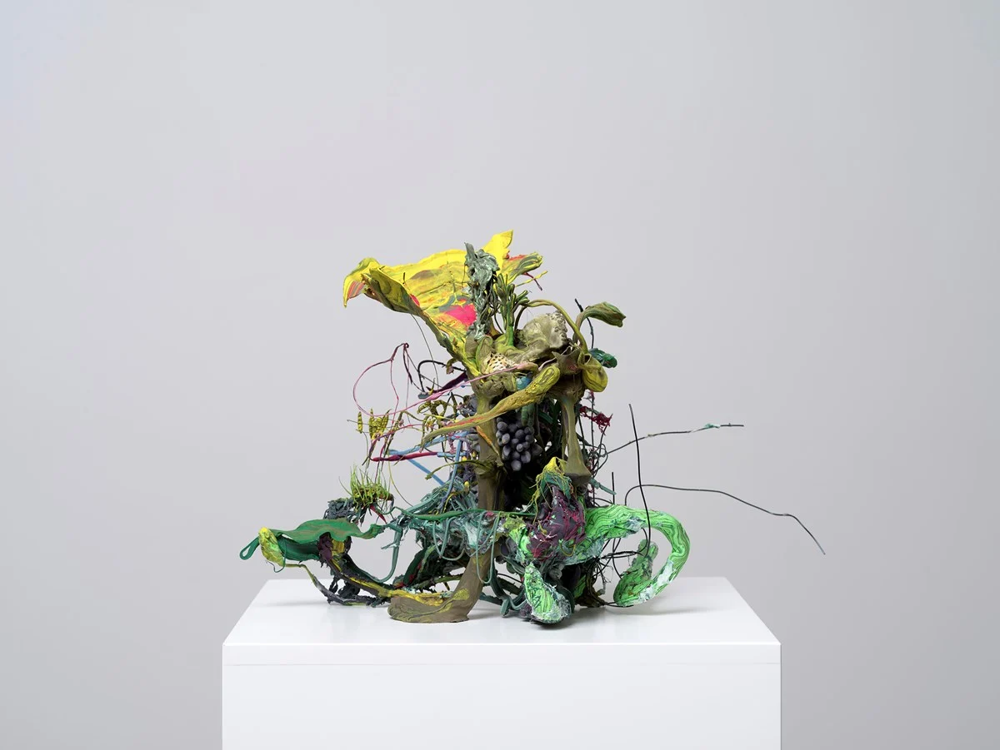

Nacido en Seúl, Xooang Choi es un escultor de obras surrealistas e increíblemente hiperrealistas. Su trayectoria temprana consiste en figuras en miniatura que aumentaron su tamaño a finales del 2000.Jung Lee se mudó a Londres, donde se graduó en el Royal College of Art con un máster en Bellas Artes. Sus obras consisten en trabajos fotográficos utilizando luces de neón.Lee Bul es una escultora y artista que representó a Corea en el Venice Biennale en 1999. Sus obras son inquisitivas, e investigan temas como la autoridad, la política y la sociedad.Il Lee es reconocido por sus increíbles dibujos a bolígrafo, pinturas al óleo e impresiones. Sus obras investigan la idea del materialismo y el proceso de crear arte.Jeongmoon Choi se mudó a Alemania a mediados de ese mismo año, y ha vivido en Berlín desde entonces.Su trabajo consiste en piezas intrigantes que sumergen al espectador utilizando luces e hilos en el mismo espacio en el que está.

Ham Jin es famoso por sus esculturas microscópicas llenas de detalles. Graduado en la Universidad de Kyungwon, Ham Jin crea miniaturas llenas de fantasía e imaginación. Jee Young Lee crea infinitos mundos y universos que sobrepasan los límites de sus paredes. Desde el 2007, Jee Young fotografía estos ambientes surrealistas, que actúan como telón de fondo de su imaginación.Hong Sung Chul se especializa en escultura en Seúl justo antes de comenzar a estudiar Comunicación Integrada en el California Institute of Arts. Este autor crea obras muy visuales que rompen con los límites de la fotografía, impresión y escultura. Je Baak, un artista especializado en vídeo, fue influenciado por el budismo zen. El resultado ha sido que sus obras multimedia traten de transmitirles a los espectadores una sensación de iluminación y una forma nueva de ver el día a día.Do-Ho Suh es más conocido por sus complejas estructuras y trabajos relacionados con los medios de comunicación. Estos incluyen el nylon translúcido Staircase III, que fue expuesto en el Tate Modern, y su hilo de pesca de nylon de color dorado y plateado, titulado Net-Work.